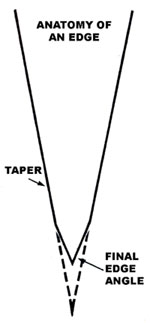
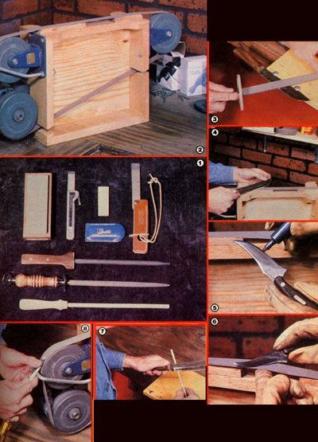

Here's an inside look at the way MOTHER's researchers maintain their tools .. . which could help you get the best performance possible from the bladed implements used in your kitchen and workshop.
There are few experiences more frustrating than attempting to work with a dull tool, but keeping keen edges on the average household's supply of bladed implements can be a very time-consuming task. Consequently, we'd like to pass on a few of the time-saving methods our workshop brigade uses to keep its (sizable!) stock of equipment well honed.
After working with a variety of different edge designs, we've come to favor a multi angled taper (as shown in the illustration) for most of the shop tools and heavy-duty knives, while we prefer a rounded version of the same edge for kitchen cutlery.
Of course, other blade configurations are well-suited to specific tasks. Hollowground knives, for example, will slice food more easily than will blades with our preferred edge . . . but the former grind's loss of strength limits its usefulness for many purposes. In fact, we're inclined to think that hollow-grinding has only three legitimate applications: on carving knives, on decorative knives (it does enhance the appearance of a blade), and on flathead screwdrivers (where the relief helps the tool reach deeper into a fastener's slot).
The specific angle to which a tool is sharpened should be determined by the duties that the implement must perform.
Wood chisels, planes, and similar shop items need a medium angle (about 30°) to peel back layers of wood, for example . . . whereas cold chisels, axes, and other heavy-duty implements need blunt angles if they're to resist chipping.
It's a good idea to let the intended task determine the edge angle when sharpening knives, too. A fine carving tool, for example, might get by with a very steep angle . . . to let it glide through a Thanksgiving turkey. However, a pocketknife honed to a similarly severe edge would never survive being used to punch holes in can lids, cut wire, or any of the other not entirely appropriate tasks such tools are regularly asked to do.
Photo 1 shows a collection of hand-held sharpening devices. Any one of them can be used to put an excellent edge on a knife . . . with a little patience. But when you're honing other tools, the manual sharpeners often aren't practical.
So, to handle the variety of implements in our workshop-and to put an edge on knives quickly-we built the belt sander that's shown in Photo 2. With it, our researchers can finely hone just about any tool in a matter of minutes.
The grinder is made of three 1-1/2"-wide, 6"-diameter casters ... a slow-speed (1,050RPM), 1/4-horsepower motor with one of the casters attached to its shaft ... a frame to connect the pieces ... and a 1"-wide sanding belt. (The belts we use are sold as crankshaft polishing items, and are available in grits as fine as 400 . . . but we've found that the worn 320 belts discarded by our local auto machine shop work quite well, and the price is right!) The working surface-atop the sander's frame-is built from oak (to resist wear), and an open area has been left in the center for doing fine work.
To show you how the device is used, let's run through the steps needed to renew a really dull kitchen knife . . . perhaps the most difficult sharpening job of all. But first, consider the lighting in your shop area. It's very hard to do a decent job of sharpening without adequate illumination . . . and MOTHER's toolsmiths recommend working with an incandescent light shining directly over the shoulder of the honing hand.
STEP ONE: Establish the taper. Knives that are badly worn or have been ground incorrectly (you'd be surprised how many are inconsistently set at the factory) need to be filed to a balanced taper of 10 to 15 ° per side. We use the finest-toothed file available, and stroke the blade very lightly (Photo 3). In this step-and in each subsequent one-only one stroke is made per side before turning the blade over.
STEP TWO: Smooth the taper. Now we go to the belt sander, to smooth out the file marks from the blade-using nothing more coarse than 240 paper-by resting it lightly on the wood-backed portion of the belt at the 10 to 15° angle (Photo 4). If at all possible, we orient the blade so that the belt is moving toward the edge ... to reduce the burr which inevitably forms during grinding. In addition, we keep the knife in constant motion across the belt, and turn it over frequently.
STEP THREE: Blue the blade. The coloration helps to show just where the edge has been ground. (We often use a wide felttip marker for this task-see Photo 5 -because it's easier to use than is machinist's bluing.)
STEP FOUR: Establish the edge. At this point, it's time to grind the edge to the desired angle. Again, the blade is moved against the wood-backed portion of the belt, but it's now held at the finished angle. The bluing makes it much easier to judge our progress during this stage.
STEP FIVE: Smooth the new edge. The gloved left index finger (assuming the person is right-handed) is slipped beneath the belt in the center section, and the blade is worked against the abrasive surface backed by a sensitive finger tip, as shown in Photo 6.
STEP SIX: Strop. To remove the burr that forms along the edge, we tack the tip of a worn belt to the edge of the table, hold the loose end out with the left hand, and draw the blade back and forth across the abrasive surface. A check with a fingernail-pulled perpendicularly past the edge-will tell you whether or not the burr is gone.
STEP SEVEN: Finish. Even a worn 320 belt will leave scratches in steel, which will make a blade more susceptible to corrosion. So we finish our cutlery with a ceramic stick (a soft Arkansas stone-without oil-will do the job, too). The edge is slipped along the rod's surface as if one were attempting to slice off a piece of stick (Photo 7). With one stroke per side, the pressure is gradually lightened as the blade moves more and more easily against the ceramic.
Our homemade belt sander has proved to be quite useful for maintaining everything from scissors to screwdrivers. We fabricated a rest-from a 3/8" X 10" carriage bolt-next to one of the wheels, too . .. so that different tools could be held easily at their preferred angles. The arc of the caster also happens to be ideal for hollow-grinding a screwdriver (as shown in Photo 8).
Depending on how worn an implement is, it can be returned to top-notch shape-using the procedure detailed above-within three to five minutes. That's a small price to pay for a tool that works!
EDITOR'S NOTE: For more information about choosing the knives that MOTH ER's methods will help you keep sharp.
|
 Staff Photo [1] LEFT TO RIGHT: Soft Arkansas stone . . . Buck sharpening steel . . . .Smith hard. Arkansas stone ... Gerber sharpening steel. BELOW, DESCENDING: .Sharpening steel for stainless . . . sharpening steel for high-carbon . . . ceramics stick. [2] MOTHER's belt sander/sharpener [3] The taper is filed onto a kitchen knife with a fine-toothed instrument (note hand guard on file). Ord v one stroke ix made per .vide before turning flit blade over [4] The tatter is smoothed on the wood-backed portion of the belt. [5] Blue coloration?which shows where the edge has been ground?is applied with a felt-tip marker. [6] The edge is worked into the blade against flit center of the bell, with a gloved finger beneath. When there's no reflection from the edge, it's sharp. [7] A polished finish is achieved by stroking the already sharp blade against a ceramic stick. [8] A screwdriver that has been hollow(against the rounded form of a caster) is able fit grip a fastener much more securely |
 |
|